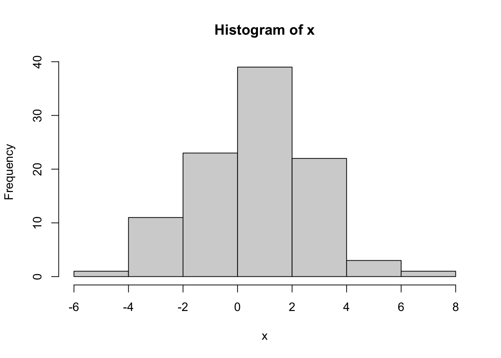
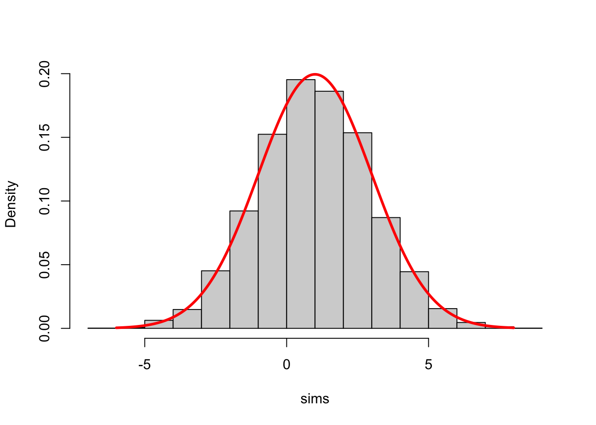

Chapter 2 Simulation of Random Variables and Monte Carlo
In the spirit of “learn by doing”, these lecture notes contain many “Problems”. Those with solutions usually introduce new concepts and feature a Comments section right after the solution. These comments are subdivided into R and Math comments focusing on the computational or conceptual features, respectively. Note that you are not expected to be able to do the solved problems before reading their solutions and comments, so don’t worry if you cannot. It is a good practice to try, though. Problems which are left unsolved, however, do not feature any new ideas and are there to help you practice the skills presented before.
2.1 Simulation of some common probability distributions
… where we also review some probability along the way.
Solution:
rgeom(50, prob = 0.4)
## [1] 1 0 3 4 1 2 0 0 2 2 0 1 5 0 1 0 2 1 1 0 2 2 2 1 0 0 1 3 2 2 1 1 1 3 5 0 1 1
## [39] 0 0 0 1 2 0 1 1 1 0 1 0Comments
R: R makes it very easy to simulate draws from a large class of named
distributions3,
such as geometric, binomial, uniform, normal, etc. For a list of all available
distributions, run help("distributions") Each available distribution has an R
name; the uniform is unif the normal is norm and the binomial is binom,
etc. If you want to simulate \(n\) draws (aka a sample of size \(n\)) from a
distribution, you form a full command by appending the letter r to its R name
and use \(n\) as an argument. That is how we arrived to rgeom(50) in the
solution above. The additional arguments of the function rgeom have to do with
the parameters of that distribution. Which parameters go with which
distributions, and how to input them as arguments to rgeom or rnorm is best
looked up inR’s extensive documentation. Try help("rnorm"), for example.
Math: You could spend your whole life trying to understand what it really means to “simulate” or “generate” a random number. The numbers you obtain from so-called random number generators (RNG) are never random. In fact, they are completely deterministically generated. Still, sequences of numbers obtained from (good) random number generators share so many properties with sequences of mythical truly random numbers, that we can use them as if they were truly random. For the purposes of this class, you can assume that the numbers R gives you as random are random enough. Random number generation is a fascinating topic at the intersection of number theory, probability, statistics, computer science and even philosophy, but we do not have the time to cover any of it in this class. If you want to read a story about a particularly bad random number generator, go here.
You might have encountered a geometric distribution before. A random variable with that distribution can take any positive integer value or \(0\), i.e., its support is \({\mathbb N}_0=\{0,1,2,3,\dots\}\). As you can see from the output above, the value \(0\) appears more often than the value \(3\), and the value \(23\) does not appear at all in this particular simulation run. The probability of seeing the value \(k\in \{0,1,2,3,\dots\}\) as a result of a single draw is given by \((1-p)^k p\), where \(p\) is called the parameter of the distribution.
That corresponds to the following interpretation of the geometric distribution: keep tossing a biased coin (with probability \(p\) of obtaining H) until you see the first H; the number Ts before that is that value your geometric random variable. If we put these probabilities in a single table (and choose \(p=0.4\), for example) it is going to look like this:| 0 | 1 | 2 | 3 | 4 | 5 | 6 | 7 | … | |
|---|---|---|---|---|---|---|---|---|---|
| Prob. | 0.4 | 0.24 | 0.144 | 0.086 | 0.052 | 0.031 | 0.019 | 0.011 | … |
Of course, the possible values our random variable can take do not stop at \(7\).
In fact, there are infinitely many possible values, but we do not have infinite
space. Note that even though the value \(23\) does not appear in the output of the
command rgeom above, it probably would if we simulated many more than \(50\)
values. Let’s try it with \(500\) draws - the table blow counts how many \(0s\),
\(1s\), \(2s\), etc. we got:
| 0 | 1 | 2 | 3 | 4 | 5 | 6 | 7 | 8 | 9 | 10 |
|---|---|---|---|---|---|---|---|---|---|---|
| 208 | 132 | 62 | 43 | 23 | 16 | 8 | 3 | 2 | 1 | 2 |
Still no luck, but we do observe values above 5 more often. By trial and error, we arrive at about \(1,000,000\) as the required number of simulations:
| 0 | 1 | 2 | 3 | … | 23 | 24 | 25 | 26 |
|---|---|---|---|---|---|---|---|---|
| 400616 | 238946 | 144274 | 86489 | … | 3 | 3 | 3 | 3 |
Solution: First, we compute the probability that the value seen in a single draw does not exceed \(22\):
pgeom(22, prob = 0.4)
## [1] 0.9999921Different draws are independent of each other, so we need to raise this to the power \(1,000,000\).
(pgeom(22, prob = 0.4))^(1e+06)
## [1] 0.0003717335Comments:
R. The command we used here is pgeom which is a cousin of rgeom. In
general, R commands that involve named probability distributions consist of two
parts. The prefix, i.e., the initial letter (p in this case) stands for the
operation you want to perform, and the rest is the R name of the distribution.
There are 4 prefixes, and the commands they produce are
| Prefix | Description |
|---|---|
r |
Simulate random draws from the distribution. |
p |
Compute the cumulative probability distribution function (cdf) (NOT pdf) |
d |
Compute the probability density (pdf) or the probability mass function (pmf) |
q |
Compute the quantile function |
(see the Math section below for the reminder of what these things are). In this
problem, we are dealing with a geometric random variable \(X\), which has a
discrete distribution with support \(0,1,2,3,\dots\). Therefore, the R name is
geom. We are interested in the probability \({\mathbb{P}}[ X\leq 22]\), which
corresponds to the cdf of \(X\) at \(x=22\), so we use the
the prefix p. Finally, we used the named parameter p and gave it the value p = 0.4, because the geometric distribution has a single parameter \(p\).
This problem also gives us a chance to discuss precision. As you can see, the probability of a single draw not exceeding \(22\) is very close to \(1\). In fact, it is equal to it to 5 decimal places. By default, R displays 7 significant digits of a number. That is enough for most applications (and barely enough for this one), but sometimes we need more. For example, let’s try to compute the probability of seeing no T (tails) in 10 tosses of a biased coin, where the probability of H (heads) is 0.9.
1 - 0.1^10
## [1] 1While very close to it, this probability is clearly not equal to \(1\), as suggested by the output above.
The culprit is the default precision. We can increase the precision (up to \(22\) digits) using the options command
options(digits = 17)
1 - 0.1^10
## [1] 0.99999999989999999Precision issues like this one should not appear in this course, but they will out there “in the wild”, so it might be a good idea to be aware of them.
Math. If you forgot all about pdfs, cdfs and such things here is a little reminder:
| cdf | \(F(x) = {\mathbb{P}}[X\leq x]\) |
| \(f(x)\) such that \({\mathbb{P}}[X \in [a,b]] = \int_a^b f(x) \, dx\) for all \(a<b\) | |
| pmf | \(p(x)\) such that \({\mathbb{P}}[X=a_n] = p(a_n)\) for some sequence \(a_n\) |
| qf | \(q(p)\) is a number such that \({\mathbb{P}}[ X \leq q(p)] = p\) |
Those random variables that admit a pdf are called continuous. The prime examples are the normal, or the exponential distribution. The ones where a pmf exists are called discrete. The sequence \(a_n\) covers all values that such a, discrete, random variable can take. Most often, \(a_n\) either covers the set of all natural numbers \(0,1,2,\dots\) or a finite subset such as \(1,2,3,4,5,6\).
Coming back to our original problem, we note that the probability we obtained is quite small. Since \(1/0.000372\) is about \(2690\), we would have to run about \(2690\) rounds of \(1,000,000\) simulations before the largest number falls below \(23\).
Solution:
qnorm(c(0.05, 0.1, 0.4, 0.6, 0.95), mean = 1, sd = 2)
## [1] -2.2897073 -1.5631031 0.4933058 1.5066942 4.2897073R. The function we used is qnorm, with the prefix q which computes the
quantile function and the R name norm because we are looking for the quantiles
of the normal distribution. The additional (named) parameters are where the
parameters of the distribution come in (the mean and the standard variation) in
this case. Note how we plugged in the entire vector
c(0.05, 0.1, 0.4, 0.6, 0.98) instead of a single value into qnorm. You can
do that because this function is vectorized. That means that if you give it
a vector as an argument, it will “apply itself” to each component of the vector
separately, and return the vector of results. Many (but not all) functions in R
are vectorized4.
As a sanity check, let’s apply pnrom (which computes the cdf of the normal) to these quantile values:
p = qnorm(c(0.05, 0.1, 0.4, 0.6, 0.95), mean = 1, sd = 2)
pnorm(p, mean = 1, sd = 2)
## [1] 0.05 0.10 0.40 0.60 0.95As expected, we got the original values back - the normal quantile function and its cdf are inverses of each other.
Math. Computing the cdf of a standard normal is the same thing reading a normal table. Computing a quantile is the opposite; you go into the middle of the table and find your value, and then figure out which “Z” would give you that value.
Solution:
sample(1:10, 60, replace = TRUE)
## [1] 2 8 9 8 4 7 7 7 2 3 3 10 6 1 9 7 4 7 6 2 2 3 10 1 9
## [26] 7 3 2 8 4 1 2 8 1 4 9 1 9 10 10 6 1 8 6 1 10 5 1 6 9
## [51] 8 3 8 9 4 6 1 6 7 8Comments:
Math. Let \(X\) denote the outcome of a single throw of a fair \(10\)-sided die. The distribution of \(X\) is discrete (it can only take the values \(1,2,\dots, 10\)) but it is not one of the more famous named distributions. I guess you could call it a discrete uniform on \({1,2,\dots, 10}\), but a better way to describe such distribution is by a distribution table, which is really just a list of possible values a random variable can take, together with their, respective, probabilities. In this case,
| 1 | 2 | 3 | 4 | 5 | 6 | 7 | 8 | 9 | 10 |
|---|---|---|---|---|---|---|---|---|---|
| 0.1 | 0.1 | 0.1 | 0.1 | 0.1 | 0.1 | 0.1 | 0.1 | 0.1 | 0.1 |
R. The command used to draw a sample from a (finite) collection is, of, course
sample. The first argument is a vector, and it plays the role of the “bag”
from which you are drawing. If we are interested in repeated, random samples, we
also need to specify replace = FALSE otherwise, you could draw any single
number at most once:
sample(1:10, 8, replace = FALSE)
## [1] 1 5 6 7 8 10 3 4With more than 10 draws, we would run out of numbers to draw:
sample(1:10, 12, replace = FALSE)
## Error in sample.int(length(x), size, replace, prob): cannot take a sample larger than the population when 'replace = FALSE'The bag you draw from can contain objects other than numbers:
sample(c("Picard", "Data", "Geordi"), 9, replace = TRUE)
## [1] "Picard" "Data" "Geordi" "Geordi" "Data" "Data" "Picard" "Data"
## [9] "Geordi"sample command to produce a weighted sample, too. For example, if we
wanted to simulate \(10\) draws from the following distribution
| 1 | 2 | 3 |
|---|---|---|
| 0.2 | 0.7 | 0.1 |
we would use the additional argument prob:
sample(c(1, 2, 3), 10, replace = TRUE, prob = c(0.2, 0.7, 0.1))
## [1] 1 2 2 1 1 2 2 3 2 2Note how it is mostly \(2\)s, as expected.
Solution:
x = rnorm(10, mean = 1, sd = 2)
hist(x)x = rnorm(100, mean = 1, sd = 2)
hist(x)
x = rnorm(1e+05, mean = 1, sd = 2)
hist(x)Comments:
R. It cannot be simpler! You use the command hist, feed it a vector of
values, and it produces a histogram. It will even label the axes for you. If you
want to learn how to tweak various features of your histogram, type ?hist.
Math. Mathematically, histogram can be produced for any (finite) sequence of
numbers: we divide the range into several bins, count how many of the points in
the sequence falls into each bin, and then draw a bar above that bin whose
height is equal (or proportional to) that count. The picture tells use about how
the sequence we started from is “distributed”. The order of the points does not
matter - you would get exactly the same picture if you sorted the points first.
If the sequence of points you draw the histogram of comes from, say, normal
distribution, the histogram will resemble the shape of the pdf of a normal
distribution. I say resemble, because its shape is ultimately random. If the
number of points is small (like in the second part of this problem) the
histogram may look nothing like the normal pdf. However, when the number of
points gets larger and larger, the shape of the histogram gets closer and closer
to the underlying pdf (if it exists). I keep writing “shape” because the three
histograms above have very different scales on the \(y\) axis. That is because we
used counts to set the vertical sizes of bins.
A more natural choice is to use the proportions, i.e. relative frequencies (i.e.
counts divided by the total number of points) for bar heights. In R, we would
need to add the additional option freq = FALSE to hist:
x = rnorm(1e+05, mean = 1, sd = 2)
hist(x, freq = FALSE)Note how the \(y\)-axes label changed from “Frequency” to “Density”. With such a normalization, the histogram of \(x\) can be directly compared to the probability density of a normal distribution. Here is a histogram of \(100,000\) simulations from our normal distribution with its density function (pdf) superimposed; I am leaving the code in case you are interested:
sims = rnorm(10000, mean = 1, sd = 2)
x = seq(-6, 8, by = 0.02)
y = dnorm(x, mean = 1, sd = 2)
hist(sims, freq = FALSE, main = "")
points(x, y, type = "l", lwd = 3, col = "red")
2.2 Additional Problems
Problem 2.6
Find the Weibull distribution in R’s help system. Simulate \(n=10000\) draws from the Weibull distribution with shape parameter \(2\) and scale parameter \(3\). Draw a histogram of your simulations.
Suppose that the vector
xcontains \(n=10000\) simulations from the standard normal \(\mu=0, \sigma=1)\). Without simulating any new random numbers, transform it into the vectorysuch thatyis a vector of \(n=10000\) simulations from the normal with \(\mu=1\) and \(\sigma=0.5\). Draw histograms of bothxandyon the same plot. (Note: the extra parameteraddis used to superimpose plots. You may want to use different colors, too. Use the e parametercolfor that. )Starting with
x=seq(-3,3,by=0.1), define the appropriate vectoryand usexandyto plot the graph of the cdf of the standard normal. The command you want to use isplotwith the following extra arguments
type="l"(to get a smooth line instead of a bunch of points).main="The CDF of the standard normal"(to set the title), and- another argument (which you must look up youself) that will set the \(y\)-axis label to \(F(x)\).
Problem 2.7
Simulate \(n=1000\) draws from the distribution whose distribution table is given by
2
4
8
16
0.2
0.3
0.1
0.4
and plot their histogram.
You may have learned in probability how to compute the pdf \(f_Y(y)\) of a transformation \(Y=g(X)\) of a random variable with pdf \(f_X(x)\). Suppose that you forgot how to do that, but have access to \(10,000\) simulations from the distribution of \(X\). How would you get an approximate idea about the shape of the function \(f_Y\)?
More concretely, take \(X\) to be exponentially distributed with parameter \(1\) and \(g(x) = \sin(x)\) and produce a picture that approximates the pdf \(f_Y\) of \(Y\). (Note: even if you remember how to do this analytically, you will run into a difficulty. The function \(\sin(x)\) is not one-to-one and the method usually taught in probability classes will not apply. If you learned how to do it in the many-to-one case of \(g(x)= \sin(x)\), kudos to your instructor!)Let \(X\) be a random variable with the Cauchy distribution, and \(Y = \operatorname{arctan}(X)\). R allows you to simulate from the Cauchy distribution, even if you do not know what it is. How would you use that to make an educated guess as to what the distribution of \(Y\) is? To make your life easier, consider \(\tfrac{2}{\pi} Y\) first.
Problem 2.8 A basic method for obtaining simulations draws from distributions other than the uniform is the transformation method. The idea is to start with (pseudo) random numbers, i.e., draws from the uniform \(U(0,1)\) distribution, and then apply a function \(g\) to each simulation. The difficulty is, of course, how to choose the right function \(g\).
Let \(X\) be a random variable with a continuous and strictly increasing cdf \(F\). What is the distribution of \(Y=F(X)\)? What does that have to do with the transformation method?Problem 2.9 (Extra credit)
Let \(f_1\) and \(f_2\) be two pdfs. We take a constant \(\alpha \in (0,1)\) and define the function \(f\) by \[ f(x) = \alpha f_1(x) + (1-\alpha) f_2(x).\] The function \(f\) is the pdf of a third distribution, which is called the mixture of \(f_1\) and \(f_2\) with weights \(\alpha\) and \(1-\alpha\). Assuming that you know how to simulate from the distributions with pdfs \(f_1\) and \(f_2\), how would you draw \(10,000\) simulations from the mixture \(f\)? Show your method on the example of a mixture of \(N(0,1)\) and \(N(4,1)\) with \(\alpha=2/3\). Plot the histogram of the obtained sample (play with the parameter
breaksuntil you get a nice picture.)(Hint: start with two vectors, the first containing \(10,000\) simulations from \(f_1\) and the second from \(f_2\). Then “toss” \(10,000\) biased coins with \(\mathbb{P}[ H ] = \alpha\) … )
The double exponential or Laplace distribution is a continuous probability distribution whose pdf is given by \[ \tfrac{1}{2} \exp(-|x|), x\in {\mathbb R}.\] This distribution is not built into R. How would you produce simulations from the double exponential using R?
⬇︎ In case you were wondering, the text below belongs to footnotes from somewhere high above.⬇︎
There are infinitely many ways random variables can be distributed. Indeed, in the discrete \({\mathbb N}\)-valued case only, any sequence of nonnegative numbers \((p_n)_n\) such that \(\sum_n p_n=1\) defines a probability distribution. It turns out, however, that a small-ish number of distributions appear in nature much more often then the rest. These distributions, like the normal, uniform, exponential, binomial, etc. turn out to be so important that they each get a name (hence named distributions). ↩︎
The function
sumadds up all the components of the vector. You would not want such a function to be vectorized. If it were, it would return exactly the same vector it got as input.↩︎